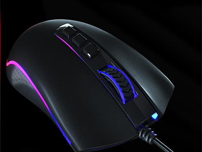

Novidade!
Mouse King Cobra
A Redragon apresenta seu mais novo e poderoso Mouse, O King Cobra Chroma: a nova versão melhorada para quem precisa de performance inigualável em cada partida. Neste modelo, o Cobra vai equipado com Switches Ópticos LK com ativação a Laser para detecção de disparos com ativação ultrarrápida de 0.2ms e o poderoso Sensor Pixart 3360, o mais poderoso Sensor Óptico Original disponível atualmente. Vire uma Lenda com o novo Redragon King Cobra e simplesmente destrua cada partida.
- Novo Sensor Óptico Profissional PIXART 3360 para Altíssima Performance (24000 DPI/50G/250ips) - Switches Ópticos LK ópticos: até 150x mais rápido que Switches Tradicionais - Durabilidade Ultra Reforçada: Switches com Durabilidade de até 50 Milhões de Cliques - Iluminação RGB Redragon Chroma: Estilo Incrível e Personalizado para Você (7 Diferentes Modos de Iluminação) - Polling Rate de 1000hz (Tempo de Resposta Ajustável via Software de 1/2/4/8ms) - 7 Botões Programáveis - 2 Botões Laterais para funções / atalhos, macros e etc
- Compatível com Software para Configuração de Macro Simples / Ajuste Iluminação RGB / Configurações de Performance - Memória Interna para Salvamento de Configurações - Base com Pés de Teflon para Deslize Suave - 5 Perfis de Configurações para Troca Rápida de Configurações de um Game para Outro - Pegada Ergonômica confortável perfeita para Destros - Cabo Trançado para maior Resistência Dimensões / Peso: Peso: 130 Gramas Dimensões: 6,6cm (L) x 12,7cm (A) x 4cm (P) Aprox. Garantia: 12 Meses
Desnvolvido por: Natan Klem